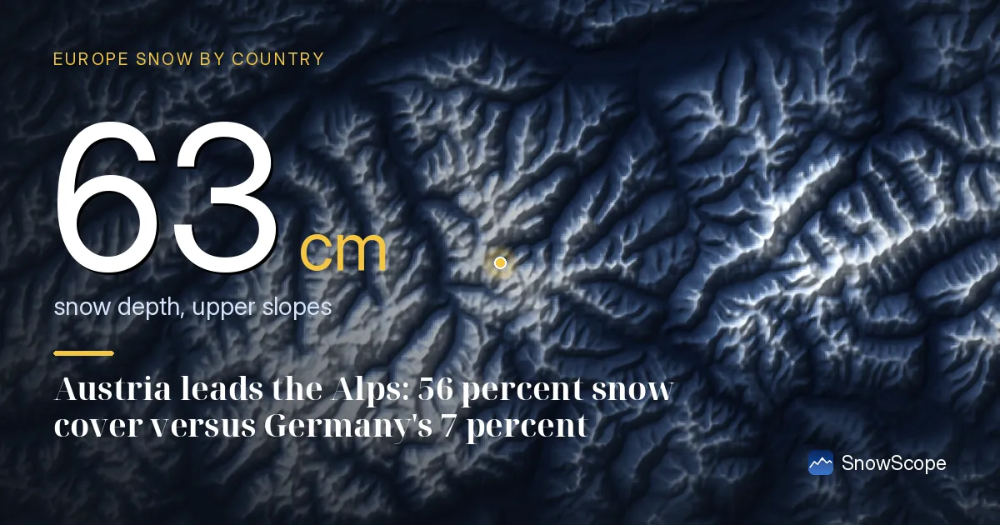
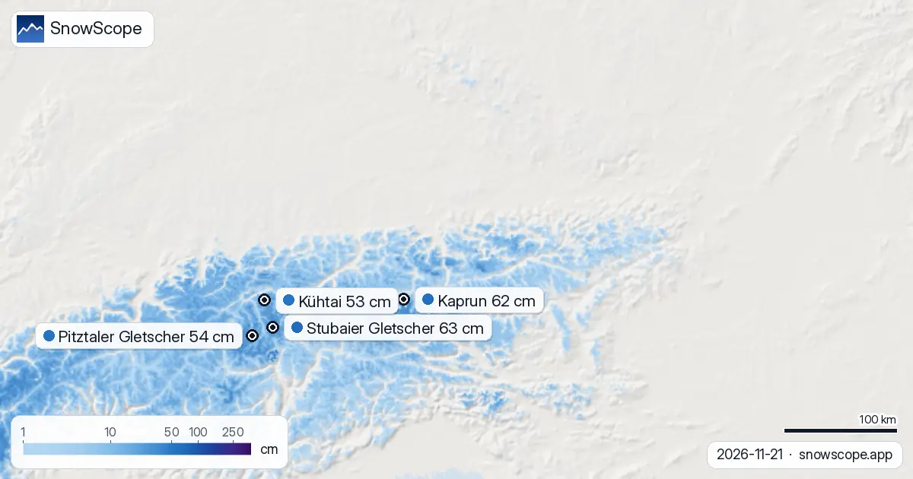

Austria leads the Alps: 56 percent snow cover versus Germany's 7 percent
Austria is snow-rich while Germany remains largely bare. With 29,110 square kilometres under snow and fresh powder reaching 47 centimetres in Vorarlberg over the past three days, Austria has built a commanding advantage as late autumn storms reshape the Alps.
See the live snow forecast for Stubaier Gletscher in the SnowScope appSnow depth, powder alerts and the 3D map, free.
Austria dominates; Germany struggles
The gap is stark. Austria's white cover sits at 56 percent of the mapped area; Germany manages only 7 percent. This is not randomness—it reflects the topography and storm paths we see in the mountains every season. Moist Atlantic systems push eastward and dump their heaviest loads on the high, steep terrain of western Austria before the air dries out over the Bavarian plains.
In absolute terms, Austria has snow across 29,110 square kilometres today, up from 25,310 yesterday. That 3,800 square kilometre jump in a single day shows how fast the season can shift. Germany's leader, Zugspitze, sits at 81 centimetres, but it is an island; the lower slopes around it are still brown. Austria's resorts form a connected white band from west to east.
| Country | White | Deepest resort | Next 7 days |
|---|---|---|---|
| Austria | 56 % | Stubaier Gletscher | 35 cm |
| Switzerland | 64 % | Anzère | 74 cm |
| Germany | 7 % | Zugspitze | 26 cm |

Vorarlberg, Carinthia, and the Ötztal lead the charge
Three hotspots stand out. Vorarlberg, tucked against the Swiss border and exposed to incoming storms, took 47 centimetres over 72 hours. That is genuine early-season snow, the kind that sticks because cold air has arrived. Carinthia, further south, picked up 33 centimetres; the Ötztal Alps, a high glacial zone we know well, received 31 centimetres.
These numbers tell a story of storm geometry. The heaviest snow fell where orography forces air upward fastest and where altitude keeps temperatures below freezing. Lower valleys and foothills, the domain of Germany's ski fields, saw less lift and milder conditions.

Glaciers lead; mid-altitude still marginal
Among named resorts, Stubaier Gletscher holds 63 centimetres, with 24 centimetres arriving in the past three days. Pitztaler Gletscher sits at 54 centimetres (26 cm new); Kühtai at 53 centimetres. Kaprun and Weißsee Gletscherwelt round out the top five. All five measured resorts now lie above or near their late-November climate average.
Height matters acutely. Above 2,000 metres, snow depth averages 19 centimetres with complete coverage. Between 1,500 and 2,000 metres, 10 centimetres lie on the ground and cover is total. Drop to 1,000–1,500 metres and the picture fragments: only 3 centimetres mean depth and 63 percent coverage. Below 1,000 metres, snow is rare (9 percent cover, nearly zero depth). The snow line sits around 1,100 metres; anyone planning to ski low-altitude terrain should expect rock, grass, and patience.
More snow is coming, with 26 November the peak
Our model forecasts 28 centimetres maximum over the next three days and 35 centimetres in the next seven. The single snowiest day will be 26 November, when 17 centimetres is likely across the mapped region. This is not a lull; it is a deepening trend.
Second-week snow (days 8–14) drops to 9 centimetres, suggesting a quieter spell mid-to-late December. For now, though, the system is delivering.
What the numbers reveal about early November snow
A week ago, only 19,900 square kilometres of Austria held snow. Today, 29,110 do. That 9,210 square kilometre expansion in seven days is the hallmark of a genuine shift from autumn to winter. It is not a freak warm-spell rebound; it is the entry of cold air and organised moisture.
Switzerland, by contrast, sits at 64 percent white cover and faces 74 centimetres in the next seven days. Germany remains marginal at 7 percent, with 26 centimetres forecast. Austria, at 56 percent and looking at 35 centimetres ahead, is squarely in the action zone—not yet winter-deep, but decisively snowy for late November.
What this means on the ground
Early-season snow is thin and often sits on bare rock and thin vegetation. The 47 centimetres in Vorarlberg sounds generous until you remember that in a few weeks, 100 centimetres will be routine; for now, it is excellent. Glaciers and high passes have enough to ski and to build a base. Mid-altitude resorts, especially those below 1,500 metres, are marginal; snow lies patchily and may not persist if November turns mild.
The storm track is favourable. If the forecast holds and 26 November delivers 17 centimetres, the foundation will deepen fast.
Tips for skiers
- Aim for altitude and glaciers: Stubaier Gletscher, Pitztaler Gletscher, and Kühtai all sit above 2,400 metres and have 50+ centimetres on a stable cold base. Ski above 2,000 metres for the best and most continuous cover.
- Watch the lower runs: zones between 1,000 and 1,500 metres have patchy snow at best; scout terrain carefully for rocks and rough ground. Ski guides and local knowledge are essential.
- Track the forecast for 26 November: if that day delivers as modelled, early-season touring and high-altitude ski days will improve markedly over the following week.
- Consult the official avalanche bulletin before any off-piste ascent, particularly in steep gullies above 2,000 metres where new snow is loading on older autumn ice.
- Expect rapid changes: early November snow depth can vary wildly by aspect and elevation. What is skiable today may change with the next wind shift or warming spell.
About these numbers
Resort snow depths are the deepest snow on the resort's upper slopes from the SnowScope snow model (about 1 km, run of 21 November); they are estimates for an area, not a measurement at one point. Station values are measurements on the date shown. Forecasts can change. Always read the official avalanche bulletin before going off-piste.
Cite this report
For research, teaching or the press: the numbers and charts are free to reuse under CC BY 4.0 with this citation.
SnowScope (2026), Austria leads the Alps: 56 percent snow cover versus Germany's 7 percent, https://snowscope.app/blog/en/2026/11/austria-snow-vs-neighbours-21-november-2026.html, accessed 2026-11-21
SnowScope (Atlas Labs). (2026, November 21). Austria leads the Alps: 56 percent snow cover versus Germany's 7 percent. SnowScope snow reports. https://snowscope.app/blog/en/2026/11/austria-snow-vs-neighbours-21-november-2026.html
BibTeX
@misc{snowscope2026austriasnowvsneighbours2,
author = {{SnowScope (Atlas Labs)}},
title = {Austria leads the Alps: 56 percent snow cover versus Germany's 7 percent},
year = {2026},
month = nov,
howpublished = {\url{https://snowscope.app/blog/en/2026/11/austria-snow-vs-neighbours-21-november-2026.html}},
note = {Published 2026-11-21 12:07 UTC; accessed 2026-11-21}
}· CC BY 4.0 · Methods, data and tools →
Stubaier Gletscher: snow and temperature by height, this winter vs last (tools) →
Follow Stubaier Gletscher
Free: a message when fresh snow is coming, and the forecast every morning.
More snow reports

Snow in December depends first on height. 46 past winters at 676 Alpine resorts show how much snow to expect on 1, 15 and 22 December, from below 1,200 m to above 2,400 m.

Snow is falling on Slovenia's ski mountains today: about 37 cm on Kanin and 21 cm on Krvavec. Where the snow lies, how it compares with past winters, and the next snowy day.

Tornik on Zlatibor had up to 39 cm on its upper slopes on 15 November 2026; by Wednesday it had melted. Kopaonik barely turned white. The week day by day and what comes next.